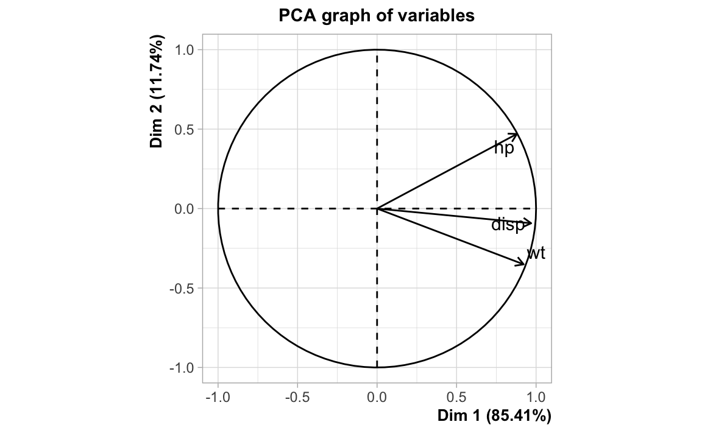

11 Regularization Techniques
In this part of the book we will talk about the notion of regularization (what is regularization, what is the purpose of regularization, what approaches are used for regularization) all of this within the context of linear models. However, keep in mind that you can also use regularization in non-linear contexts.
So what is regularization? If you look at the dictionary definition of the term regularization you should find something like this:
regularization; the act of bringing to uniformity; make (something) regular
Simply put: regularization has to do with “making things regular”.
But what about regularization in the context of supervised learning? What are the “irregular” things that need to be made “regular”? In order to answer this question, we will first motivate the discussion by sWe will answer this questions by discussing the effects of having predictors with high multicollinearity.
means reducing the variability (and therefore the size) of the vector of predicted coefficients. What we have seen is that if there is multicollinearity, some of the elements of \(\mathbf{b}_{\text{ols}}\) will have high variance. In other words, \(\| \mathbf{b}_{\text{ols}} \|_{\ell_p}\) will be very large (in this case, we say that the coefficients are irregular). In regularization, we try to mitigate the effects of these irregular coefficients.
We will discuss two main types of approaches to achieve regularization:
Dimension Reduction: Principal Components Regression (PCR), Partial Least Squares regression (PLSR)
Penalized Methods: Ridge Regression, Lasso regression.
11.1 Multicollinearity Issues
One of the issues when fitting regression models is due to multicollinearity: the condition that arises when two or more predictors are highly correlated.
How does this affect OLS regression?
When one or more predictors are linear combinations of other predictors, then \(\mathbf{X^\mathsf{T} X}\) is singular. This is known as exact collinearity. When this happends, there is no unique LS estimate \(\mathbf{b}\).
A more challenging problem arises when \(\mathbf{X^\mathsf{T} X}\) is close to singular but not exactly. This is usually referred to as near perfect collinearity or simply multicollinearity. Multicollinearity leads to imprecise (unstable) estimates \(\mathbf{b}\).
What are the typical causes of multicollinearity?
- One or more predictors are linear combinations of other predictors
- One or more predictors are almost perfect linear combinations of other predictors
- More predictors than observations \(p > n\)
11.1.1 Toy Example
Let’s play with mtcars, one of the built-in data sets in R.
mtcars[1:10, ]
#> mpg cyl disp hp drat wt qsec vs am gear carb
#> Mazda RX4 21.0 6 160.0 110 3.90 2.620 16.46 0 1 4 4
#> Mazda RX4 Wag 21.0 6 160.0 110 3.90 2.875 17.02 0 1 4 4
#> Datsun 710 22.8 4 108.0 93 3.85 2.320 18.61 1 1 4 1
#> Hornet 4 Drive 21.4 6 258.0 110 3.08 3.215 19.44 1 0 3 1
#> Hornet Sportabout 18.7 8 360.0 175 3.15 3.440 17.02 0 0 3 2
#> Valiant 18.1 6 225.0 105 2.76 3.460 20.22 1 0 3 1
#> Duster 360 14.3 8 360.0 245 3.21 3.570 15.84 0 0 3 4
#> Merc 240D 24.4 4 146.7 62 3.69 3.190 20.00 1 0 4 2
#> Merc 230 22.8 4 140.8 95 3.92 3.150 22.90 1 0 4 2
#> Merc 280 19.2 6 167.6 123 3.92 3.440 18.30 1 0 4 4Let’s use mpg as response, and disp, hp, and wt as predictors.
# response
mpg <- mtcars$mpg
# predictors
disp <- mtcars$disp
hp <- mtcars$hp
wt <- mtcars$wt
# standardized predictors
X <- scale(cbind(disp, hp, wt))Let’s inspect the correlation matrix:
\[ \mathbf{R} = \frac{1}{n-1} \mathbf{X^\mathsf{T} X} \]
# correlation matrix
cor(X)
#> disp hp wt
#> disp 1.0000000 0.7909486 0.8879799
#> hp 0.7909486 1.0000000 0.6587479
#> wt 0.8879799 0.6587479 1.0000000If we look at the circle of correlations from a principal components analysis, we see the following pattern:

Carrying out an ordinary least squares regression:
#>
#> Call:
#> lm(formula = mpg ~ disp + hp + wt)
#>
#> Coefficients:
#> (Intercept) disp hp wt
#> 37.105505 -0.000937 -0.031157 -3.800891
#>
#> Call:
#> lm(formula = mpg ~ disp + hp + wt)
#>
#> Residuals:
#> Min 1Q Median 3Q Max
#> -3.891 -1.640 -0.172 1.061 5.861
#>
#> Coefficients:
#> Estimate Std. Error t value Pr(>|t|)
#> (Intercept) 37.105505 2.110815 17.579 < 2e-16 ***
#> disp -0.000937 0.010350 -0.091 0.92851
#> hp -0.031157 0.011436 -2.724 0.01097 *
#> wt -3.800891 1.066191 -3.565 0.00133 **
#> ---
#> Signif. codes: 0 '***' 0.001 '**' 0.01 '*' 0.05 '.' 0.1 ' ' 1
#>
#> Residual standard error: 2.639 on 28 degrees of freedom
#> Multiple R-squared: 0.8268, Adjusted R-squared: 0.8083
#> F-statistic: 44.57 on 3 and 28 DF, p-value: 8.65e-11What about \(\mathbf{(X^\mathsf{T} X)^{-1}}\)
#> disp hp wt
#> disp 0.23627475 -0.08598357 -0.15316573
#> hp -0.08598357 0.08827847 0.01819843
#> wt -0.15316573 0.01819843 0.15627798Let’s introduce exact collinearity. For example, let’s create a fourth variable
disp1 that is a multiple of disp, and then let’s add this variable to the data
matrix X. What happens if we try to compute the inverse of \(\mathbf{X^\mathsf{T}X}\)?
disp1 <- 10 * disp
X1 <- scale(cbind(disp, disp1, hp, wt))
solve(t(X1) %*% X1)
#> Error in solve.default(t(X1) %*% X1): system is computationally singular: reciprocal condition number = 1.55757e-17As you can tell, R detected perfect collinearity, and the computation of the inverse shows that the matrix if singular.
Let’s introduce near-exact collinearity
set.seed(123)
disp2 <- disp + rnorm(length(disp))
X2 <- scale(cbind(disp, disp2, hp, wt))
solve(t(X2) %*% X2)
#> disp disp2 hp wt
#> disp 588.167214 -590.721826 1.01055902 1.99383316
#> disp2 -590.721826 593.525960 -1.10174784 -2.15719062
#> hp 1.010559 -1.101748 0.09032362 0.02220277
#> wt 1.993833 -2.157191 0.02220277 0.16411837Let’s make things even more extreme!
set.seed(123)
disp3 <- disp + rnorm(length(disp), mean = 0, sd = 0.1)
X3 <- scale(cbind(disp, disp3, hp, wt))
cor(disp, disp3)
#> [1] 0.9999997And let’s introduce a minor, tiny modification, that in theory, would hardly have any effect:
# small changes may have a "butterfly" effect
disp31 <- disp3
# change just one observation
disp31[1] <- disp3[1] * 1.01
X31 <- scale(cbind(disp, disp31, hp, wt))
cor(disp, disp31)
#> [1] 0.9999973When we calculate the inverse of \(\mathbf{X}_{31}^\mathsf{T} \mathbf{X}_{31}\), something weird happens:
solve(t(X3) %*% X3)
#> disp disp3 hp wt
#> disp 59175.36325 -59202.97211 10.91501090 21.38646548
#> disp3 -59202.97211 59230.83035 -11.00617104 -21.54976679
#> hp 10.91501 -11.00617 0.09032362 0.02220277
#> wt 21.38647 -21.54977 0.02220277 0.16411837
solve(t(X31) %*% X31)
#> disp disp31 hp wt
#> disp 5941.5946101 -5942.3977358 0.30661752 0.64947961
#> disp31 -5942.3977358 5943.4373181 -0.39266978 -0.80278577
#> hp 0.3066175 -0.3926698 0.08830442 0.01825147
#> wt 0.6494796 -0.8027858 0.01825147 0.15638642This is what we may call a “butterfly effect.” By modifying just one cell in \(\mathbf{X}_{31}\) by adding a little amount of random noise, the inverses
\((\mathbf{X}_{3}^\mathsf{T} \mathbf{X}_{3})^{-1}\) and \(\mathbf{X}_{31}^\mathsf{T} \mathbf{X}_{31}\) have changed dramatically.
11.2 Irregular Coefficients
In OLS regression, the theoretical variance-covariance matrix of the regression coefficients is given by:
\[ Var(\mathbf{\boldsymbol{\hat{\beta}}}) = \ \begin{bmatrix} Var(\hat{\beta}_1) & Cov(\hat{\beta}_1, \hat{\beta}_2) & \cdots & Cov(\hat{\beta}_1, \hat{\beta}_p) \\ Cov(\hat{\beta}_2, \hat{\beta}_1) & Var(\hat{\beta}_2) & \cdots & Cov(\hat{\beta}_2, \hat{\beta}_p) \\ \vdots & & \ddots & \vdots \\ Cov(\hat{\beta}_p, \hat{\beta}_1) & Cov(\hat{\beta}_p, \hat{\beta}_2) & \cdots & Var(\hat{\beta}_p) \\ \end{bmatrix} \]
\[ Var(\mathbf{\boldsymbol{\hat{\beta}}}) = \sigma^2 (\mathbf{X^\mathsf{T} X})^{-1} \]
Doing some algebra,
\[ Var(\boldsymbol{\hat{\beta}}) = \sigma^2 (\mathbf{X^\mathsf{T} X})^{-1} \]
The variance of a particular coefficient \(\hat{\beta}_j\) is given by:
\[ Var(\hat{\beta}_j) = \sigma^2 \left [ (\mathbf{X^\mathsf{T} X})^{-1} \right ]_{jj} \]
where \(\left [ (\mathbf{X^\mathsf{T} X})^{-1} \right ]_{jj}\) is the \(j\)-th diagonal element of \((\mathbf{X^\mathsf{T} X})^{-1}\)
A couple of remarks:
- Recall again that we don’t know \(\sigma^2\). How can we find an estimator \(\hat{\sigma}^2\)?
- We don’t observe the error terms \(\boldsymbol{\varepsilon}\) but we do have the residuals \(\mathbf{e = y - \hat{y}}\)
- As well as the Residual Sum of Squares (RSS)
\[ \text{RSS} = \sum_{i=1}^{n} e_{i}^{2} = \sum_{i=1}^{n} (y_i - \hat{y}_i)^2 \]
11.2.1 Effect of Multicollinearity
Assuming standardized variables, \(\mathbf{X^\mathsf{T} X} = n \mathbf{R}\) It can be shown that:
\[ Var(\boldsymbol{\hat{\beta}}) = \sigma^2 \left ( \frac{\mathbf{R}^{-1}}{n} \right ) \]
and \(Var(\hat{\beta}_j)\) can then be expressed as:
\[ Var(\hat{\beta}_j) = \frac{\sigma^2}{n} [\mathbf{R}^{-1}]_{jj} \]
It turns out that:
\[ [\mathbf{R}^{-1}]_{jj} = \frac{1}{1 - R_{j}^{2}} \]
is known as the Variance Inflation Factor or VIF. If \(R_{j}^{2}\) is close to 1, then VIF will be large, and so \(Var(\hat{\beta})\) will also be large.
If we write the eigenvalue decomposition of \(\mathbf{R}\) as:
\[ \mathbf{R = V \boldsymbol{\Lambda} V^\mathsf{T}} \]
then the inverse of \(\mathbf{R}\) becomes:
\[ \mathbf{R^{-1} = V \boldsymbol{\Lambda}^{-1} V^\mathsf{T}} \]
It can be shown that:
\[ Var(\hat{\beta}_j) = \left ( \frac{\sigma^2}{n} \right ) \sum_{l=1}^{p} \frac{v^{2}_{jl}}{\lambda_l} \]
As you can tell, the variance of the estimators depends on the inverses of the eigenvalues of \(\mathbf{R}\). With very small eigenvalues, the larger the variance of the estimates.
In summary:
- the standard errors of \(\hat{\beta}_j\) are inflated.
- the fit is unstable, and becomes very sensitive to small perturbations.
- small changes in \(Y\) can lead to large changes in the coefficients.
What would you do to overcome multicollinearity?
- Reduce number of predictors
- If \(p > n\), then try to get more observations (increase \(n\))
- Find an orthogonal basis for the predictors
- Impose constraints on the estimated coefficients
- A mix of some or all of the above?
- Other ideas?
11.3 Regularization Metaphor
In OLS, we want to find parameters that give us a linear combination of our response variables. Think of this as if you go “shopping” for parameters. We assume (initially) that we have a blank check, and can pick whatever parameters we want. In regularization, we impose some sort of restriction on what coefficients we can buy. We could use penalized methods or we could use a slightly more lenient method: dimension reduction.
In dimension reduction, there are no explicit penalties, but we still impose a “cost” on the regressors that are highly collinear. We reduce the number of parameters that we can buy.
In penalized methods, we explicitly impose a budget on how much money we can spend when buying parameters.